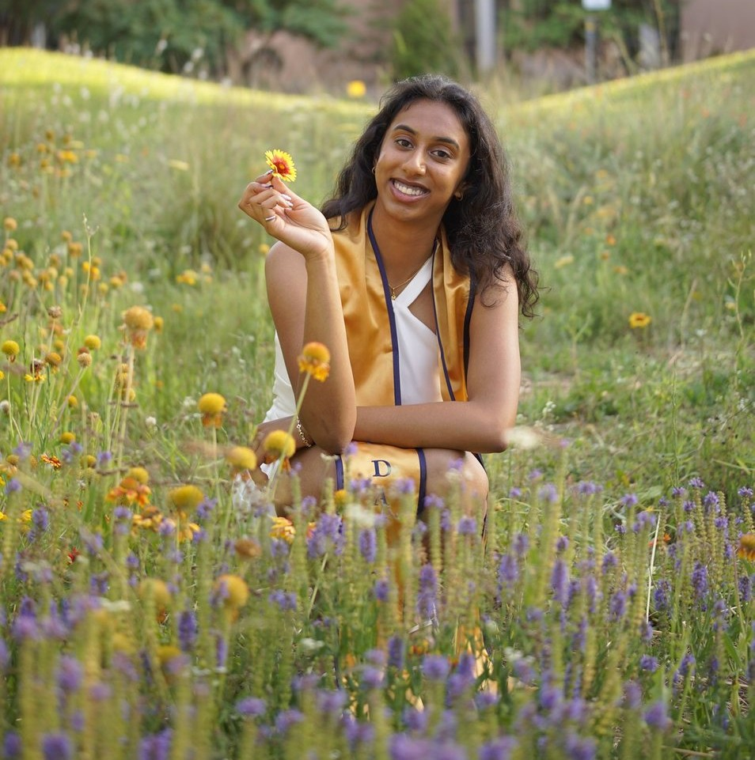

SolidWorks · DOE · V&V · Failure Analysis
Surgical drill bit design with performance verification under torque, force, and wear loads.

UR5e · Python · Sensors · Vision
Robotic test automation and OCR/label verification to improve repeatability and manufacturing quality.